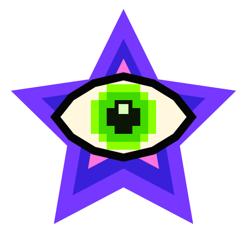

System Sneak Peek
PurpleStar SOS is the companion application created for the Soul Constellations Deep Dive program.
Rather than treating astrology, numerology, tarot, nomenology, and other symbolic systems as separate subjects, PurpleStar SOS brings them together into one interactive symbolic operating system.
The project is currently in active development. Below is a video preview and space for screenshots from each module as the system continues to grow.
MODULE 01 // SOUL CONSTELLATION
The central command board where the symbolic matrix comes together. The Soul Constellation connects personal data, calculated systems, guided reflection, and character synthesis across the full nine-grid journey.
MODULE 02 // ZODIAC NATAL MATRIX
Explore the natal chart through planetary placements, houses, aspects, timing, and connected symbolic interpretations that support deeper self-analysis.
MODULE 03 // NUMEROLOGY ENGINE
Calculate and explore core numerology, cycles, karmic patterns, strengths, lessons, and practical reflections through an integrated personal profile.
MODULE 04 // NOMENOLOGY RESEARCH TERMINAL
Research names, words, brands, places, and projects through name meaning, numerology, symbolic resonance, and PurpleStar synthesis.
MODULE 05 // COSMIC CASTING
Roll astrology dice and explore how planet, zodiac sign, and house combine into symbolic messages, reflection questions, and practical applications.
MODULE 06 // SOULCLOCK
Follow planetary days, planetary hours, lunar movement, seasonal rhythms, cosmic currents, calendars, and reflections in one daily timing dashboard.
MODULE 07 // PIXEL TAROT
Draw cards, explore upright and reversed meanings, save readings, and connect tarot symbolism with the wider PurpleStar SOS system.
MODULE 08 // COSMIC BODY EXPLORER
Explore anatomy, chakras, energetic systems, medical astrology, and body-based symbolism through an interactive visual learning environment.
BUILDING THE SYMBOLIC OPERATING SYSTEM
PurpleStar SOS continues to evolve alongside the Soul Constellations Deep Dive program. New modules, research tools, and symbolic connections are added as development progresses.
Features and interface details may evolve as the system grows.
Sign up for updates on the PurpleStar SOS page on purplestar-tarot.com!